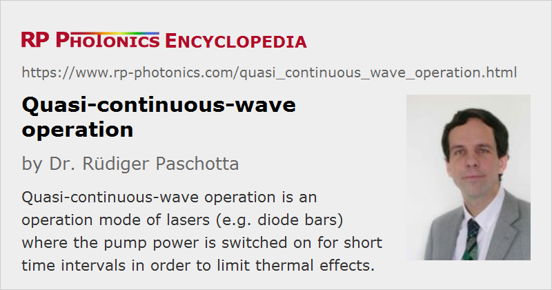

Quasi-continuous-wave Operation
Definition: an operation mode of lasers (e.g. diode bars) where the pump power is switched on for short time intervals in order to limit thermal effects
German: Quasi-CW-Betrieb, quasi-kontinuierlicher Betrieb
Categories: lasers, light pulses
How to cite the article; suggest additional literature
Author: Dr. Rüdiger Paschotta
Quasi-continuous-wave (quasi-cw) operation of a laser means that its pump source is switched on only for certain time intervals, which are short enough to reduce thermal effects significantly, but still long enough that the laser process is close to its steady state, i.e. the laser is optically in the state of continuous-wave operation. The duty cycle (percentage of “on” time) may be, e.g., a few percent, thus strongly reducing the heating and all the related thermal effects, such as thermal lensing and damage through overheating. Therefore, quasi-cw operation allows the operation with higher output peak powers at the expense of a lower average power.
Pulsed operation with significantly shorter pumping times, where an optical steady state is not reached, is called gain switching.
Quasi-continuous-wave operation is most often used with diode bars and diode stacks. Such devices are sometimes even designed specifically for quasi-cw operation: their cooling arrangement is designed for a smaller heat load, and the emitters can be more closely packed in order to obtain a higher brightness and beam quality. Compared with ordinary continuous-wave operation, additional lifetime issues can result from quasi-cw operation, related e.g. to higher optical peak intensities or to frequent temperature changes.
Some doped-insulator solid-state lasers are also operated in quasi-cw operation. Such lasers are sometimes called heat capacity lasers.
Questions and Comments from Users
Here you can submit questions and comments. As far as they get accepted by the author, they will appear above this paragraph together with the author’s answer. The author will decide on acceptance based on certain criteria. Essentially, the issue must be of sufficiently broad interest.
Please do not enter personal data here; we would otherwise delete it soon. (See also our privacy declaration.) If you wish to receive personal feedback or consultancy from the author, please contact him e.g. via e-mail.
By submitting the information, you give your consent to the potential publication of your inputs on our website according to our rules. (If you later retract your consent, we will delete those inputs.) As your inputs are first reviewed by the author, they may be published with some delay.
Bibliography
| [1] | T. Dascalu et al., “100-W quasi-continuous-wave diode radially pumped microchip composite Yb:YAG laser”, Opt. Lett. 27 (20), 1791 (2002), doi:10.1364/OL.27.001791 |
| [2] | C. Y. Li et al., “QCW diode-side-pumped Nd:YAG ceramic laser with 247 W output power at 1123 nm”, Appl. Phys. B 103 (2), 285 (2010), doi:10.1007/s00340-010-4228-y |
See also: continuous-wave operation, modes of laser operation, gain switching, diode bars, diode stacks
and other articles in the categories lasers, light pulses
|  |
If you like this page, please share the link with your friends and colleagues, e.g. via social media:
These sharing buttons are implemented in a privacy-friendly way!